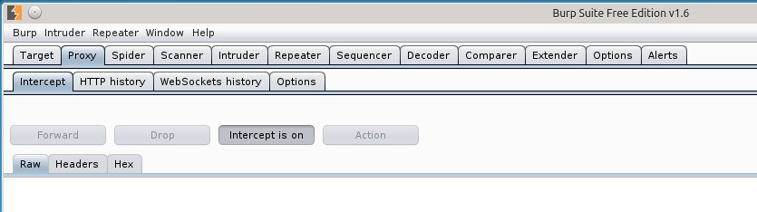
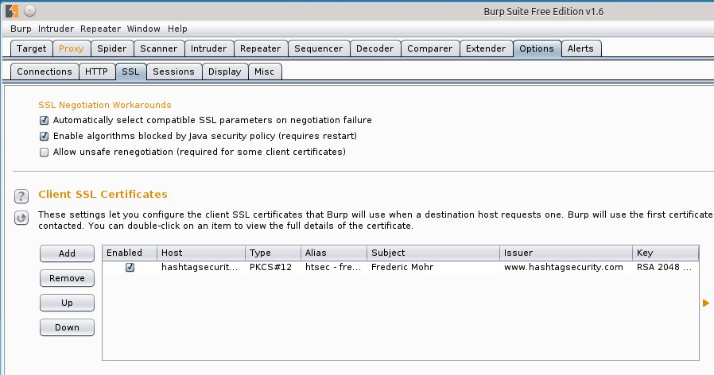
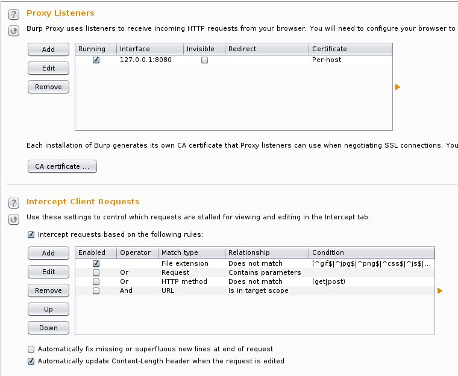
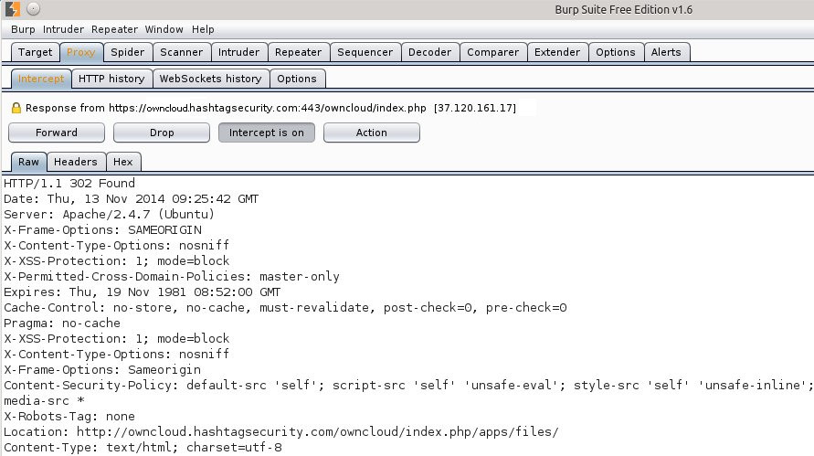
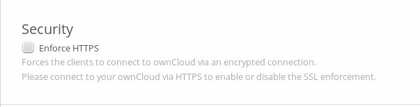

Troubleshooting with BURP

Recently I installed owncloud on one of my servers. The setup went fine and all seemed good, until I noticed that the redirection after the login page was behaving somewhat strangely. But no worries - BURP to the rescue!
Before we delve into this whole thing let me just say that, while I really like BURP, I don't want to sell it (or anything really). So far I always used the free version and never experienced any problems due to feature locks but if you're an open source enthusiast you might wanna try the OWASP Zed Attack Proxy (ZAP) as an alternative to BURP.
Back to the story. In order to understand my problem, you need some insight into the setup I'm using.
User HTTPS Public HTTP Internal
[BROWSER] -(443)> [APACHE PROXY] -(80)> [APACHE OWNCLOUD]
All Requests to HTTP:80 are redirected by [APACHE PROXY] to https://www.hashtagsecurity.com
All Requests to HTTPS:443 are handled by [APACHE PROXY] vHosts (SNI)
Now, whenever I tried to login at https://owncloud.hashtagsecurity.com/owncloud/index.php, I got redirected to https://www.hashtagsecurity.com/owncloud/index.php and had to manually change the subdomain back to owncloud in order to be logged in.
So the first step for me was to find out where the redirect to www.hashtagsecurity.com came from.
Enter BURP, the reverse proxy tool that I came to know as a pentesting and troubleshooting gem.
BURP is an intercepting proxy first and foremost, which gives you the ability to do a local man-in-the-middle between your browser and webz and examine, drop, forward, alter, forge, etc. HTTP(S) requests and responses.
In this case, I used it to find out why I was redirected to www. instead of going to owncloud..
After starting BURP and adjusting my Firefox proxy settings to use localhost:8080, I went to my owncloud login page and started the BURP proxy in intercepting mode.

Here is where I hit the first bump. Apparently BURP doesn't forward TLS client certificates so I had to import mine first.

After that, I changed the proxy settings to also intercept responses. This enabled me to look closer at whatever the server sent me in response to my requests.

The first intercepted request was the login, in which you can see my login credentials being sent to the server. In the first response we can see exactly where the problem lies. The URL in the Location header is correct, but it is set to http:// which results in a redirect by apache to https://www.hashtagsecurity.com/.

Obviously, this can easily be solved by changing the apache vhost config from Redirect to Rewrite.
# Remove Redirect
RedirectPermanent / https://www.hashtagsecurity.com/
# And add Rewrite
RewriteEngine On
RewriteCond %{HTTPS} off
RewriteRule (.*) https://%{HTTP_HOST}%{REQUEST_URI}
While this did solve my problem, it wasn't a satisfying solution. I'm still being redirected which is totally unnecessary. In order to change that, I needed to enable Enforce HTTPS in owncloud.

The last hurdle was, that owncloud told me that I need to visit the page via HTTPS in order to enable Enforce HTTPS. That was a bit confusing, until I realized that from the perspective of the owncloud server I am browsing via HTTP all the time. In order to get this fixed, I just needed to enable TLS on the backend owncloud apache and set the proxy to use HTTPS connections in the internal network as well.